라즈베리파이로 레트로(ReTroPie) 게임기 만들기
라즈베리파이로 레트로(ReTroPie) 게임기 만들기
안녕하세요.
이번에 소개할 내용은 라즈베리파이를 이용해서 레트로(ReTroPie) 게임기를 만들어 보겠습니다.
고전게임을 좋아하시거나 고전게임이 무엇인지 잘 모르시는 분들께 한번 만들어서 즐기시는것을
한번쯤 추천을 드리겠습니다.
오랜만에 옛날게임을 즐기며 추억의 향수를 느끼실수 있습니다.
준비물
- 라즈베리파이 3(Raspberry Pi 3 model B)
- 레트로파이용 전용 케이스
- SD카드 8기가 이상
- HDMI케이블
- 5V 2A USB 케이블과 어뎁터
- USB키보드 또는 게임기 패드
위의 준비물이 갖춰졌으면 본격적으로 레트로 게임기를 만들어 보겠습니다.
라즈베리파이 오락실
레트로파이 간략한 준비물의 상태는 아래와 같습니다.
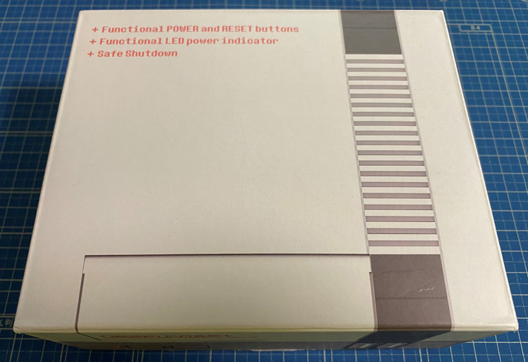
케이스를 꺼내기전 박스포장된 상태 입니다.
박스포장도 레트로 게임기 디자인으로 되어 있습니다.
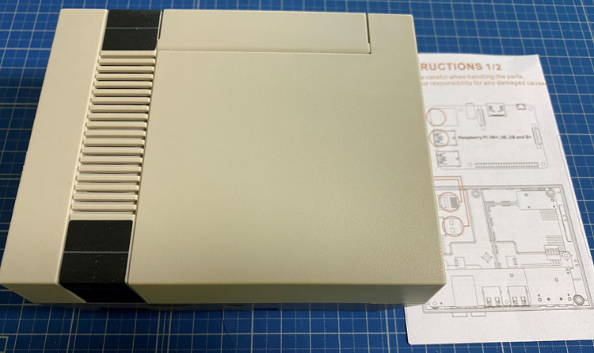
박스에서 레트로게임기 케이스를 꺼낸 모습 입니다.
옆에는 각 구조 설명과 조립방법이 적혀져 있습니다.
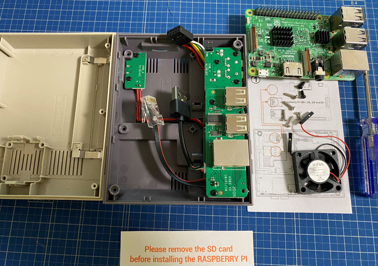
조립하기전 부품 상세 내용물 입니다.
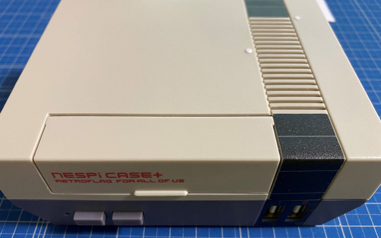
조립이 완성되었습니다.
본격적으로 게임기로 사용할수 있게 다음 준비를 하도록 하겠습니다.
우선 SD카드에 레트로파이용 OS를 설치부터 진행을 하도록 하겠습니다.
SD카드를 컴퓨터에 삽입후 balenaEtcher를 실행해 주세요.
balenaEtcher에 대해 잘 모르실경우 라즈베리파이3 B 설치하기를 참고해 주세요.
SD카드를 삽입을 하시고 balenaEtcher를 실행을 해주셨으면
아래의 레트로파이 사이트에서 레트로파이용 OS를 다운로드 받아주세요.
https://retropie.org.uk/download/
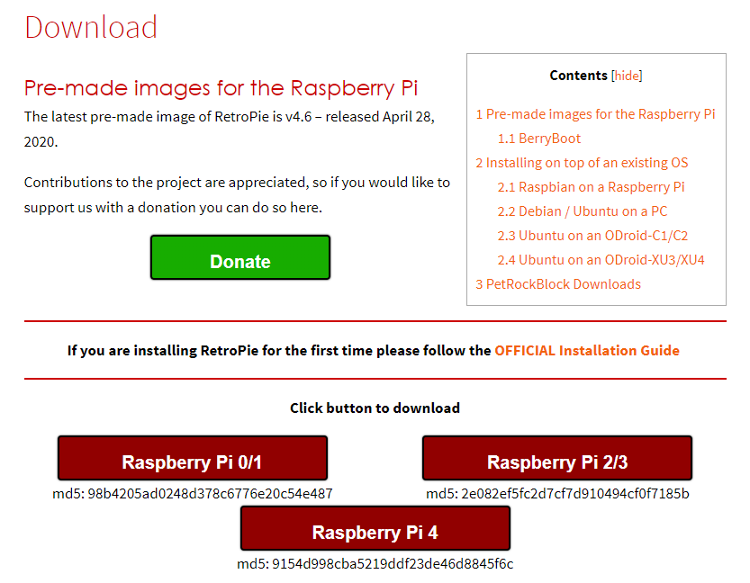
보유하신 라즈베리파이 기종에 맞게 다운로드를 해주시기 바랍니다.
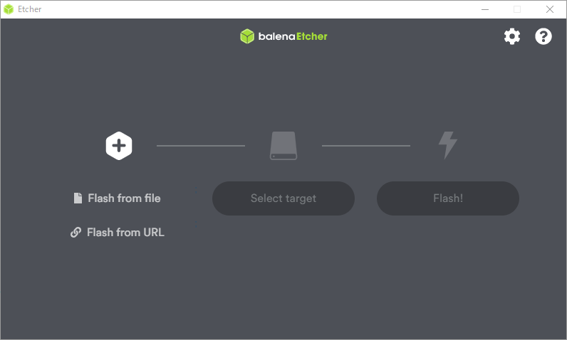
balenaEtcher를 실행한 상태 입니다.
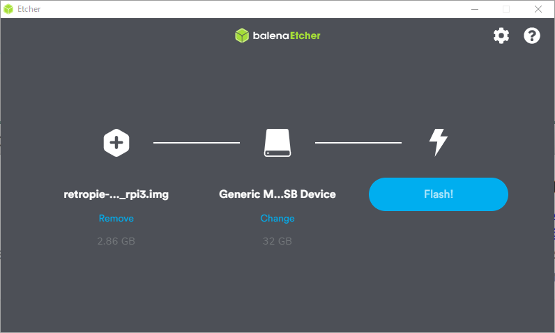
첫번째에 다운로드 받으신 레트로파이 OS 이미지파일을 선택하시고
두번째는 컴퓨터에 삽입하신 SD카드를 선택해 주세요. 그리고 마지막 Flash!버튼을 눌러주시기 바랍니다.
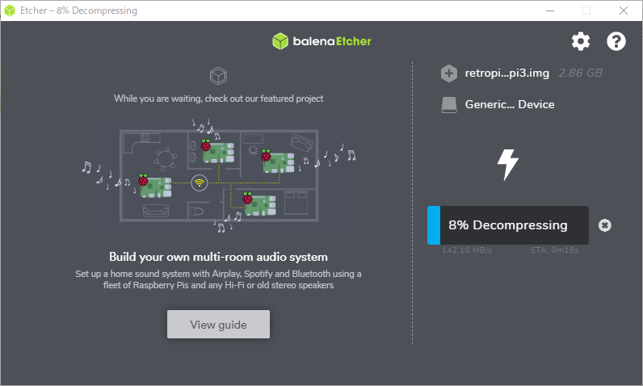
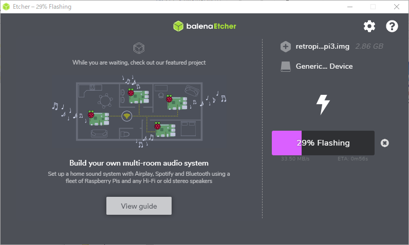
위와같이 나오면 SD카드를 포맷후 레트로파이 OS 설치가 진행 됩니다.
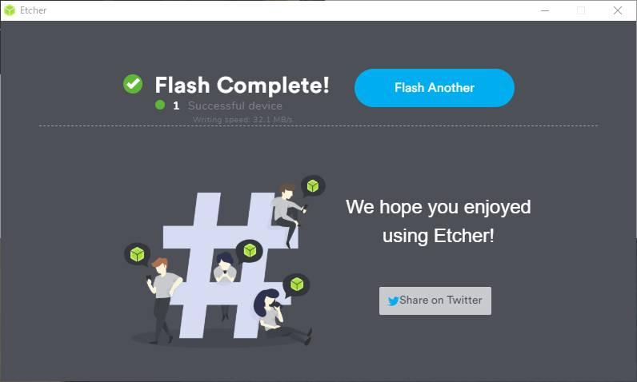
레트로파이 OS 설치가 완료 되었습니다.
SD카드를 추출하시고 라즈베리파이에 삽입을 해주시기 바랍니다.
그리고 모니터 또는 티비에 연결을 하신후 전원을 넣어주시기 바랍니다.
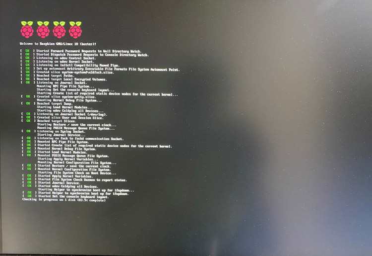
그러면 레트로파이 OS가 기동을 하는게 나오게 됩니다.
조금 기다리시면 자동으로 넘어가게 됩니다.
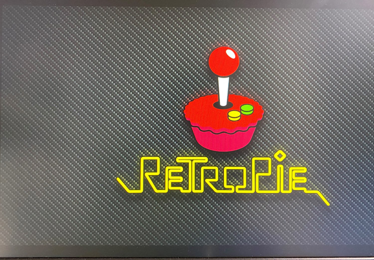
처음 화면 입니다.
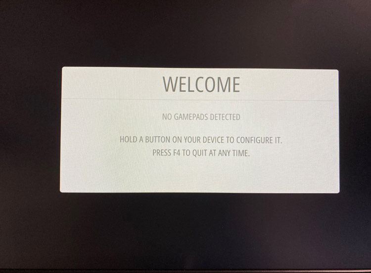
USB키보드 또는 게임기 패드로 조작키 설정을 하는 화면이 나오게 되며
안내대로 따라서 설정을 하시고 완료를 하시면 됩니다.
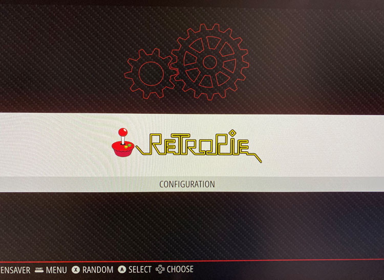
모든 설정이 끝나면 이런 화면이 나오고 이제 게임을 즐기실수 있습니다.